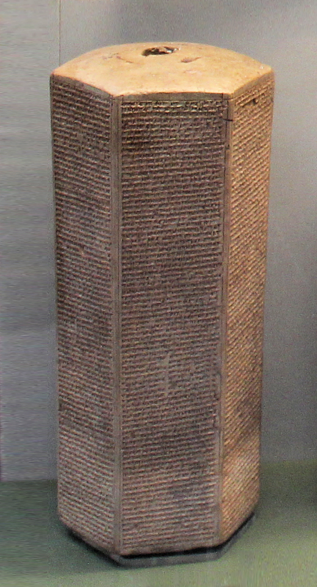
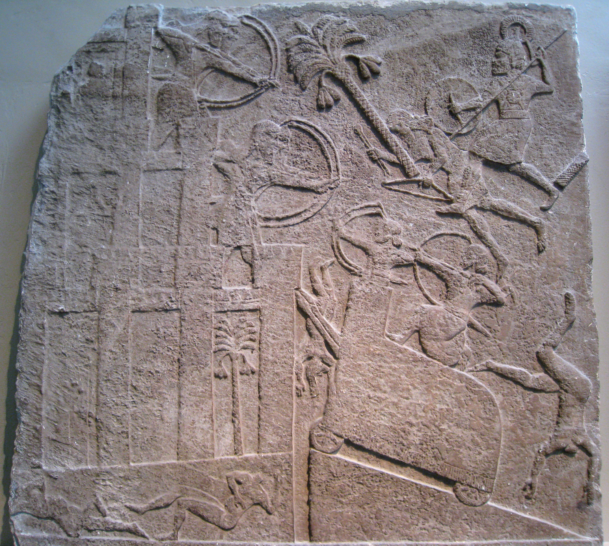
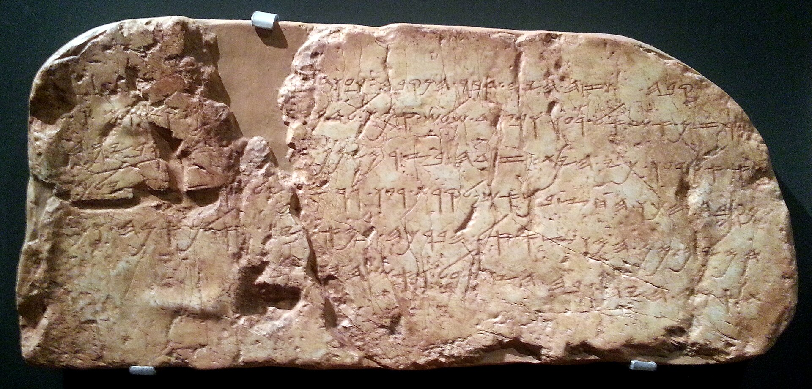
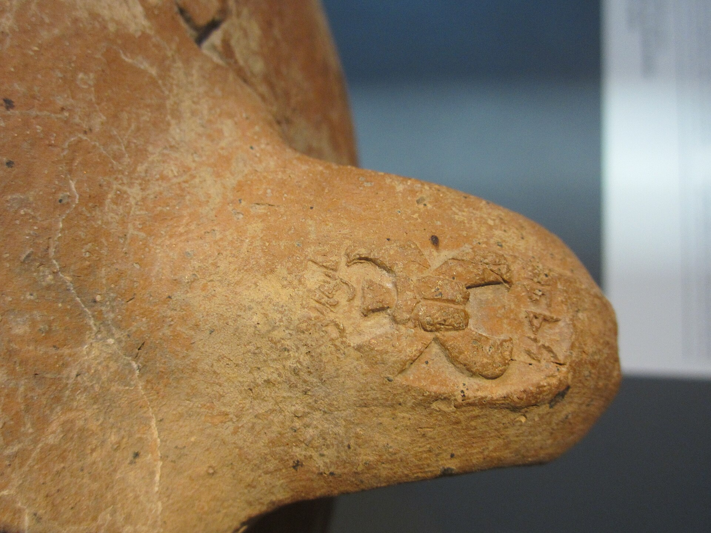
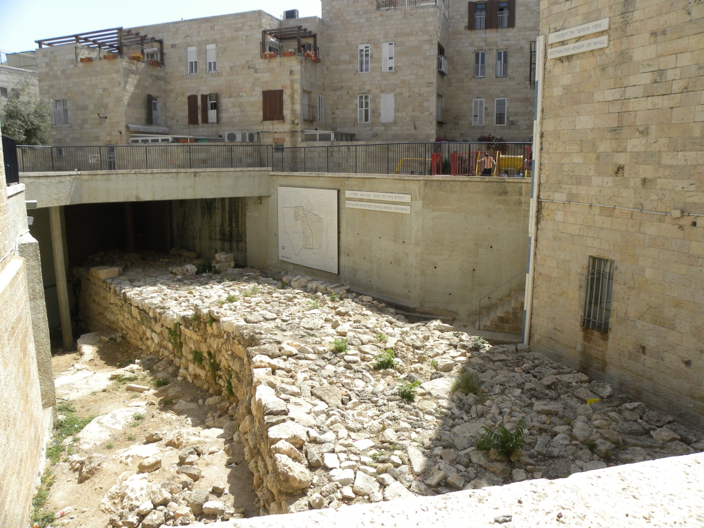

«Lo encerré como un pájaro en una jaula, en Jerusalén, su ciudad real.» La frase está en los prismas de Senaquerib, tallada tres veces en arcilla, y es una de las más citadas de la epigrafía asiria. Suele leerse como una humillación. Conviene leerla también como lo que no dice: una jaula no es una ciudad conquistada.
En los anales asirios, una capital rebelde sitiada acaba tomada. Es el guion. Que en este caso no lo esté es la anomalía más importante de todo el episodio, y el punto de partida de una de las tradiciones religiosas más duraderas del mundo antiguo.
Tres relatos del mismo año
De la campaña de 701 a.C. tenemos algo que casi nunca se tiene: tres fuentes independientes sobre el mismo suceso, dos de ellas contemporáneas. Y las tres cuentan cosas distintas sin que ninguna resulte comprobablemente falsa.
El prisma dice que Senaquerib tomó cuarenta y seis ciudades fortificadas, fortalezas y aldeas incontables; que contó como botín a doscientas mil ciento cincuenta personas, «pequeñas y grandes, hombres y mujeres», más el ganado; que construyó rampas de asedio; que transfirió territorio judaíta a los reyes filisteos; y que recibió después tributo en Nínive: oro, plata, antimonio, piedras preciosas, mobiliario con incrustaciones de marfil, músicos, y las hijas del rey.
El libro de los Reyes ofrece dos versiones cosidas una detrás de otra, y la costura se ve. En 18:13-16, Ezequías se somete, admite «he faltado» y paga trescientos talentos de plata y treinta de oro, despojando el Templo para reunirlos. Desde 18:17 empieza otro relato: la embajada del Rabsaqué al pie de la muralla, el oráculo de Isaías, y el ángel de YHWH que mata a ciento ochenta y cinco mil asirios en una noche.
Y los relieves de Nínive no hablan de Jerusalén en absoluto. Hablan de otra ciudad.

Donde las cifras se tocan y donde no
El cotejo de los números tiene un detalle que a los historiadores les importa mucho. La plata no coincide: trescientos talentos en la Biblia, ochocientos en el prisma. Se explica por patrones de talento distintos —el judaíta y el asirio no pesaban lo mismo—, por partidas incluidas o excluidas, o simplemente por inflación asiria. Pero el oro coincide exactamente: treinta talentos en las dos fuentes. Esa coincidencia es la razón principal por la que 2 Reyes 18:14-16 se considera dependiente de una fuente archivística real, y no de una tradición oral.
La cifra de doscientas mil ciento cincuenta personas, en cambio, se considera retórica entre los asiriólogos. Y los ciento ochenta y cinco mil muertos por el ángel pertenecen a otro género de escritura: ninguna reconstrucción histórica los admite, y el texto que los relata no pretende ser un parte de guerra.
La ciudad que sí cayó
Senaquerib dedicó a Laquis una sala entera de su palacio en Nínive. A Jerusalén, ninguna. Ese reparto de espacio en las paredes de un palacio dice más sobre lo que ocurrió que muchos párrafos.
Laquis es, además, el mejor caso de convergencia entre texto, imagen y suelo de todo el período: el relieve dibuja una rampa de asedio, y la excavación encontró una rampa de asedio en el sitio exacto, con la contrarrampa que los defensores levantaron por dentro para seguir estando más altos. Es un lugar donde se puede examinar, elemento por elemento, qué fuente atestigua qué.

El corte del asedio
Un corte transversal por el ángulo suroeste de Laquis, con cada elemento etiquetado según la fuente que lo atestigua. Al filtrar por los prismas de Senaquerib, la escena entera se apaga: los anales no nombran Laquis ni una sola vez.
Abrir el corte →Merece la pena adelantar aquí el hallazgo que ordena esa pieza, porque también ordena este episodio. Ningún prisma ni anal de Senaquerib menciona Laquis por su nombre, ni ninguna de las cuarenta y seis ciudades. Los anales sí nombran ciudades de la llanura costera y de Filistea, y a los reyes de Asdod, Ecrón y Gaza. De Judá nombran solo Jerusalén, que es la que no cayó. El único texto asirio que pronuncia el nombre de Laquis es el epígrafe de dos líneas grabado junto al relieve.
El agua de Jerusalén, un siglo antes de lo que se creía
La preparación de Ezequías para el asedio tiene un símbolo consagrado: el túnel de Siloé, quinientos treinta y tres metros excavados en la roca para llevar el agua del manantial de Gihón al interior de la ciudad. La inscripción de Siloé, hallada en 1880, narra el momento en que los dos equipos de picadores, trabajando en sentidos opuestos, se encontraron. Es uno de los textos hebreos monumentales más antiguos que se conservan.
Con una particularidad que casi nunca se menciona: la inscripción no nombra a ningún rey.

La atribución a Ezequías descansa en 2 Reyes 20:20 y en 2 Crónicas 32, más la convergencia de la paleografía y de la datación radiométrica. La fecha está firme: carbono 14 del enlucido original y uranio-torio de los espeleotemas formados sobre él sitúan la obra en torno al 700 a.C., y en todo caso antes del 700 con alta probabilidad. Eso mató definitivamente la propuesta de una fecha asmonea, que se había defendido en 1996 y quedó refutada punto por punto ese mismo año.
Lo que ha cambiado no es la fecha del túnel. Es su significado.
Un estudio publicado en PNAS fecha la monumental presa de Siloé entre 805 y 795 a.C., con una resolución de unos diez años, a partir de paja y ramitas en el mortero. Doce metros de alto, más de ocho de ancho, veintiún metros expuestos: la mayor presa conocida en Israel. Combinado con el radiocarbono de la Torre del Manantial, que es del siglo IX, el resultado es que la gran ingeniería hidráulica de Jerusalén empieza en torno al 800 a.C., un siglo antes de Ezequías, probablemente bajo Joás o Amasías y como respuesta a la variabilidad climática. El túnel deja de ser el punto de partida del sistema y pasa a ser su fase final. No desmiente la atribución a Ezequías, que sigue siendo la lectura probable. Cambia la historia que se cuenta con ella: no es el acto de genio de un rey acorralado, es la culminación de un siglo de obra pública.

Hay además una discusión sobre cuánto del túnel es obra humana. Sneh, Weinberger y Shalev sostuvieron que siguió una red de cavidades kársticas preexistentes, lo que reduciría la escala del proyecto; Shimron y Frumkin lo rechazaron con más de doscientas mediciones estructurales, defendiendo una excavación íntegramente humana. Y Reich y Shukron han propuesto una fecha algo anterior, de finales del siglo IX o comienzos del VIII.
Los sellos que no eran un plan de guerra
El otro símbolo de los preparativos de Ezequías son los sellos LMLK: impresiones sobre asas de jarras de almacenamiento judaítas con la leyenda lmlk, «perteneciente al rey», un escarabeo alado o un disco solar, y en la mayoría uno de cuatro topónimos: Hebrón, Zif, Socó y mmšt, cuya identificación se desconoce y sobre la que es mejor no especular. Se conocen en torno a dos mil impresiones, unas mil quinientas de ellas procedentes de excavaciones o prospecciones documentadas, con su máxima concentración en el Laquis destruido en 701.

La lectura clásica hacía del sistema entero un dispositivo de emergencia creado entre 704 y 701 para aprovisionar las plazas fuertes. Hoy la posición dominante es distinta: Lipschits, Sergi y Koch sitúan el arranque después del 732 a.C., cuando Judá pasa a ser vasallo asirio, y lo prolongan durante todo el siglo VII —unas doscientas ochenta impresiones son de producción posterior a 701. Es decir, un sistema tributario de larga duración ligado al vasallaje, no una movilización bélica puntual. Solo las llamadas impresiones «privadas», con nombres personales, se asocian específicamente a los preparativos de la guerra.
Lo que los LMLK sí prueban, y es mucho, es que Judá tenía en los siglos VIII y VII una burocracia estatal desarrollada, capaz de recaudar en especie y de abastecer guarniciones.

Por qué se levantó el sitio
Y llegamos a la pregunta que el episodio no puede evitar. El marco general es consenso: Senaquerib no tomó Jerusalén, pero Judá quedó devastada y tributaria, y Ezequías conservó el trono. Lo que no hay es acuerdo sobre el mecanismo.
Ezequías compró el levantamiento del cerco. Es la hipótesis que menos supone y la que hoy más se acepta: encaja con el relato de 2 Reyes 18:14-16, con la coincidencia del oro y con el tributo que el propio prisma dice haber recibido después en Nínive.
Senaquerib tenía problemas más graves en el sur de Mesopotamia. Un cerco prolongado ante una ciudad de montaña, ya aislada y sin sus fortalezas, era un mal uso de un ejército necesario en otro sitio.
Se construye a partir de la matanza nocturna que cuenta 2 Reyes y de una noticia de Heródoto sobre ratones que devoraron el equipo asirio en Egipto. Es sugerente y no tiene apoyo documental directo: está entre la hipótesis y la especulación.
El texto bíblico menciona la aproximación de un ejército egipcio. La dificultad es cronológica: Taharqa era muy joven en 701, y su reinado empieza bastante después. La hipótesis sobrevive en versiones matizadas.
Conviene añadir una cautela sobre la teoría de las dos campañas, que sigue circulando: sostiene que hubo una segunda expedición de Senaquerib, posterior, en la que la liberación de Jerusalén encajaría mejor. Mordechai Cogan la refutó con tres argumentos difíciles de rodear: no hay rastro de una reconquista asiria del Levante posterior al 688, Esarhaddón no hizo tal campaña, y Senaquerib destruyó Babilonia en 689 desde una posición de fuerza que no admite un desastre previo en Judá. El consenso es una sola campaña, en 701.
Lo que nació de un asedio que no acabó
La consecuencia más duradera de 701 no es política ni militar: es teológica. De un hecho verificable —que la ciudad no cayó cuando cuarenta y seis ciudades sí cayeron— se desarrolló en Jerusalén una tradición sobre la inviolabilidad de Sión: la convicción de que aquella ciudad y aquel templo eran indestructibles porque su Dios los defendía.
Esa convicción es la que hace posible el relato del ángel. Y es también, ciento quince años más tarde, la que hará que la destrucción efectiva de Jerusalén por Babilonia sea una crisis no solo material sino conceptual: habrá que rehacer la teología entera para explicar por qué esta vez sí. De eso trata el final de esta serie.
Antes, la entrega siguiente se detiene en el rey que la tradición convirtió en el mejor de todos, y en el problema de que su gran reforma religiosa no aparece en el suelo.
Nota sobre las fuentes
Los anales de Senaquerib, en las tres copias del Prisma de Taylor (British Museum), el Prisma de Jerusalén (Museo de Israel) y el Prisma de Chicago (ISAC). Traducción de referencia en ANET³ 288 y, para el aparato crítico, RINAP 3. Sobre la teoría de las dos campañas y su refutación: M. Cogan, BAR 27/1 (2001).
Sobre el túnel y la inscripción: A. Frumkin, A. Shimron y J. Rosenbaum, Nature 425 (2003), para la datación por carbono 14 y uranio-torio; la propuesta asmonea de J. Rogerson y P. Davies, Biblical Archaeologist 59/3 (1996), y su refutación en el número 59/4 del mismo año. La presa de Siloé: J. Szanton, F. Vukosavović, R. Berko et al., PNAS 122/35 (2025).
Sobre los sellos LMLK: O. Lipschits, O. Sergi e I. Koch, Tel Aviv 37 (2010) y 43 (2016), frente a la posición clásica de D. Ussishkin y N. Naaman. Sobre Laquis, la excavación de referencia es D. Ussishkin, The Renewed Archaeological Excavations at Lachish (1973-1994), y para la rampa, Y. Garfinkel, M. Mumcuoglu, C. Carroll y P. Pytlik, Oxford Journal of Archaeology (2021).